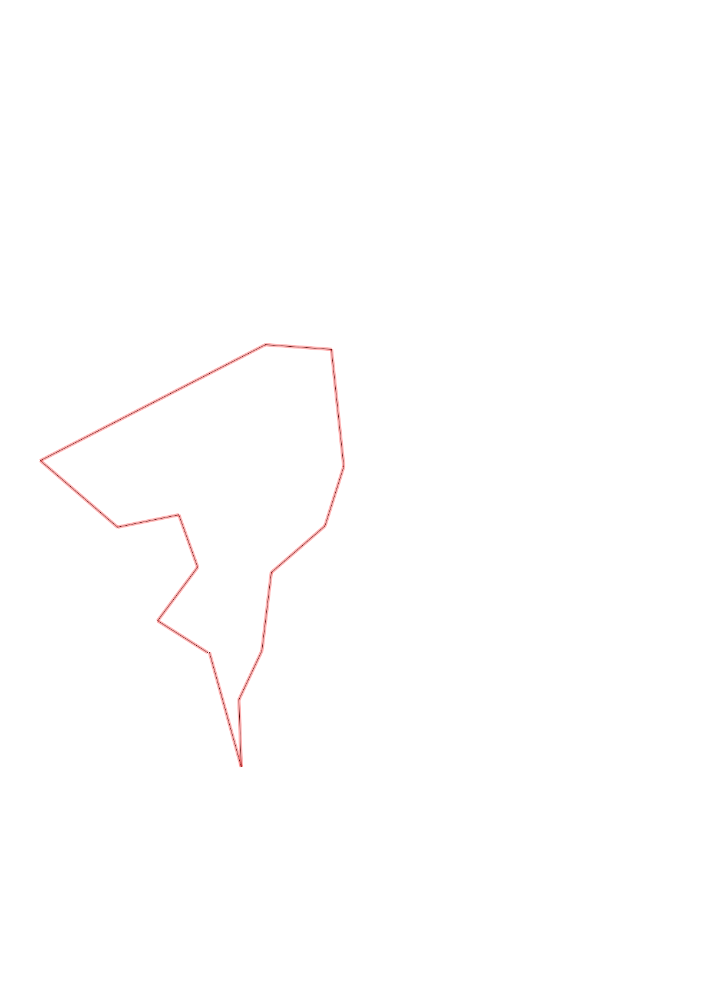
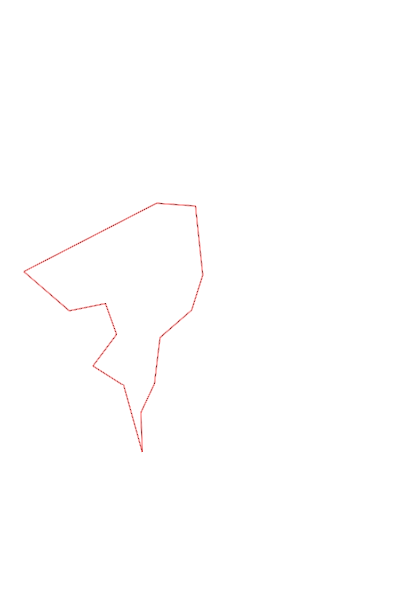

| Control |
Points |
Time Punched |
Distance |
Your Time |
Pace |
Place |
Fastest Time |
Median Time |
% Behind Fastest |
| 35 |
30 |
|
0.27 |
0:01:40 |
06:10 |
10 / 17 |
0:01:07 |
0:01:37 |
49% |
| 51 |
50 |
|
0.3 |
0:02:51 |
09:30 |
5 / 12 |
0:02:01 |
0:03:06 |
41% |
| 58 |
50 |
|
0.25 |
0:02:19 |
09:16 |
7 / 9 |
0:01:32 |
0:02:16 |
51% |
| 72 |
70 |
|
0.28 |
0:02:53 |
10:17 |
7 / 9 |
0:01:47 |
0:02:29 |
61% |
| 92 |
90 |
|
0.46 |
0:05:31 |
11:59 |
8 / 11 |
0:03:10 |
0:04:02 |
74% |
| 65 |
60 |
|
1.13 |
0:16:41 |
14:45 |
1 / 1 |
0:16:41 |
0:16:41 |
0% |
| 34 |
30 |
|
0.3 |
0:03:16 |
10:53 |
2 / 4 |
0:02:51 |
0:03:16 |
14% |
| 36 |
30 |
|
0.53 |
0:04:14 |
07:59 |
5 / 5 |
0:02:45 |
0:03:33 |
53% |
| 91 |
90 |
|
0.28 |
0:04:15 |
15:10 |
4 / 5 |
0:03:56 |
0:04:09 |
8% |
| 41 |
40 |
|
0.32 |
0:03:01 |
09:25 |
2 / 7 |
0:02:38 |
0:04:19 |
14% |
| 63 |
60 |
|
0.35 |
0:03:38 |
10:22 |
2 / 6 |
0:02:36 |
0:04:24 |
39% |
| 37 |
30 |
|
0.24 |
0:02:22 |
09:51 |
1 / 4 |
0:02:22 |
0:03:29 |
0% |
| 42 |
40 |
|
0.3 |
0:03:24 |
11:20 |
1 / 1 |
0:03:24 |
0:03:24 |
0% |
| Finish |
0 |
|
0.53 |
0:04:16 |
08:03 |
2 / 4 |
0:03:42 |
0:06:11 |
15% |
Total Distance Covered: 5.54km
Points Scored: 670
Late Penalty: -20
Final Score: 650
Total Time: 1hours 0minutes 21seconds
Efficiency: 117.33 points/km
 
